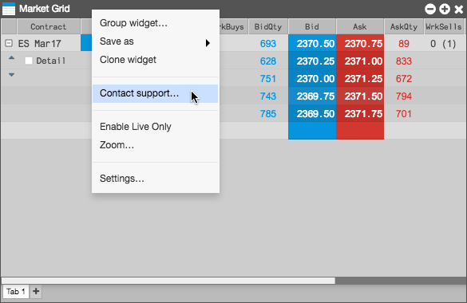
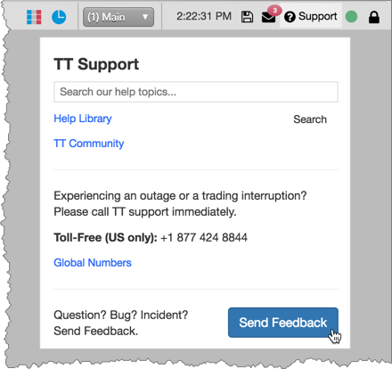
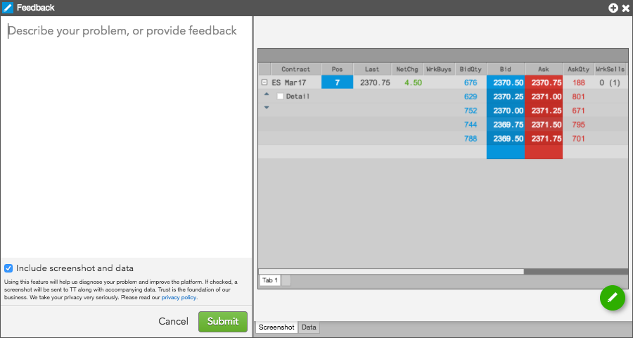
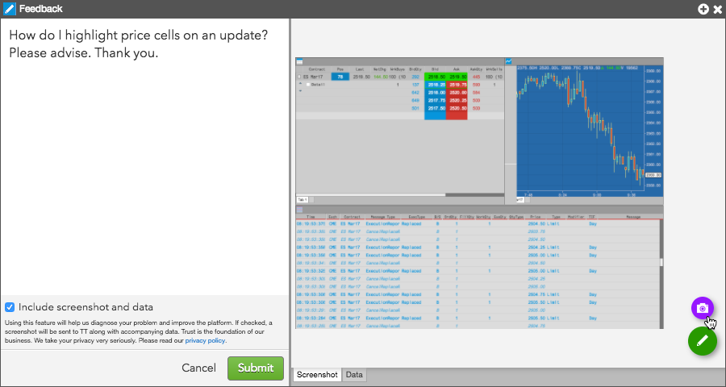
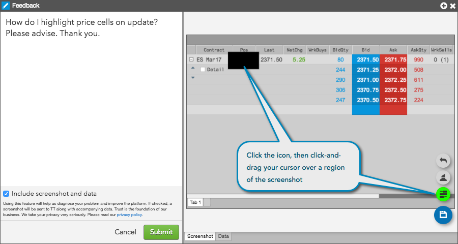
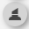
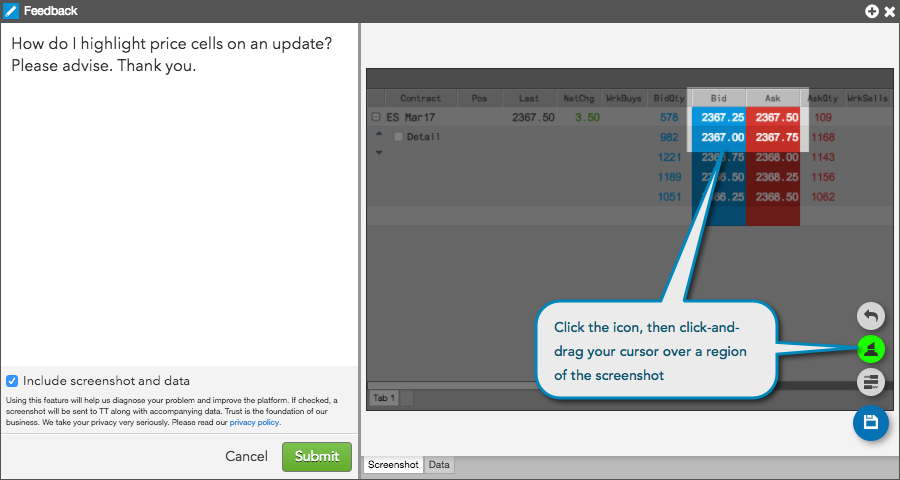

To report an incident or send feedback:
Right-click in the widget's title bar and select Contact support... in the context menu.

Tip: Click ? Support on the workspace menu bar and click Send Feedback on the TT Support menu to open a Feedback widget with a screenshot of your entire workspace.

In the left pane of the open Feedback widget, describe the issue or provide feedback for the corresponding widget.

If you do not want to include a screenshot and data regarding your environment, uncheck Include screenshot and data.
This option is checked (enabled) by default and a screenshot of the widget with corresponding meta data is sent to TT with your feedback.
Note: Including the screenshot and data helps TT more quickly diagnose your issue.
If you have a widget screenshot but want to send a screenshot of your entire workspace, click in the right pane.

Tip: After capturing your workspace, you can click to toggle between the widget and workspace screenshots.
You can also choose to hide and highlight parts of the screenshots that you submit with your feedback.
- Optionally, click the Data tab and review the meta data that will be sent to TT.
Click Submit.
Hiding parts of a screenshot
To hide parts of a screenshot:
- Click (the edit icon) in the lower right-pane and click .
- Move the cursor to a region on the screenshot and click-and-drag the cursor.
A black box is displayed to cover up the selected region on the screenshot.

To undo any changes, click .
- To save the changes, click
 .
.
Highlighting parts of a screenshot
To highlight parts of a screenshot:
- Click (the edit icon) in the lower right-pane and click .
- Move the cursor to a region on the screenshot and click-and-drag the cursor.
The selected region is highlighted and the rest of the screenshot is shaded. Click-and-drag the cursor to adjust the size of the highlighted region.

To undo any changes, click .
- To save the changes, click .